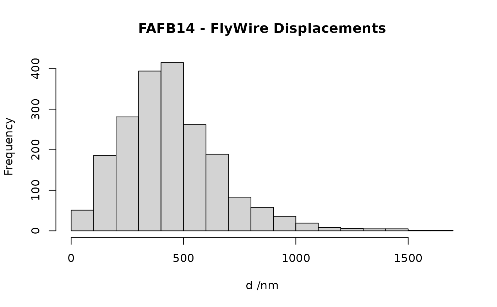

flywire2fafb maps points FlyWire->FAFB
fafb2flywire maps points FAFB->FlyWire
Arguments
- xyz
A Nx3 matrix of points
- method
Whether to map many points at once (default) or just one
- chunksize
The number of points to send to the server when mapping many points at once.
- swap
When
TRUEapplies the deformation field in the opposite direction e.g. to give a coarse mapping of points FAFB->FlyWire. This is wrong but may be useful.- ...
Additional arguments passed to
httr::GET/POSToperation
Details
Note that you can also access FlyWire<->FAFB bridging registrations
via the xform_brain series of functions. This will allow you
to transform most kinds of 3D data objects, whereas the flywire2fafb
function is restricted to plain 3D coordinates. See examples.
Mapping single points is unlikely to be useful, but you may wish to adjust
the chunksize argument to send more points at once at the risk of
possible server timeouts. The default value is quite conservative.
When swap=TRUE displacements will be applied in the opposite
direction to what is intended. This can be used to provide a coarse inverse
mapping if you feed in FAFB points. This is wrong but was useful before the
inverse mapping was available as it can get you closer to the right place
in FlyWire than just assuming that FAFB14 and FlyWire are in the same
space. This works because deformations are mostly fairly smooth at the
scale of FAFB-FlyWire displacements. Operationally we find that residual
displacements are typically of the order 100 nm using this procedure. Since
2020-08-08 we have a real inverse available, so this is now only of
historical interest.
Examples
# identified location in FAFB14
p.fafb.nm <- cbind(477042, 284535, 90680)
p.fafb.raw <- p.fafb.nm/c(4,4,40)
# corresponding location in FlyWire
p.flywire.raw <- cbind(118865, 71338, 2267)
p.flywire.nm <- p.flywire.raw * c(4,4,40)
# check displacement
flywire2fafb(p.flywire.nm)-p.fafb.nm
#> X Y Z
#> [1,] 3 -1 0
# check what happens when you apply the inverse
fafb2flywire(p.fafb.nm)-p.flywire.nm
#> X Y Z
#> [1,] -3 2 0
data("AV4b1", package='catmaid')
set.seed(42)
before=xyzmatrix(AV4b1)[sample(nvertices(AV4b1), size=2000), ]
after=fafb2flywire(before)
d=sqrt(rowSums((before-after)^2))
hist(d, br=20, main="FAFB14 - FlyWire Displacements", xlab="d /nm")

if (FALSE) {
AV4b1.flywire <- xform_brain(AV4b1, reference="FlyWire", sample="FAFB14")
plot3d(neuronlist(AV4b1.flywire, AV4b1))
}